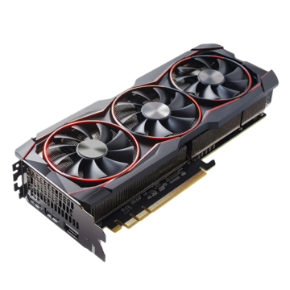
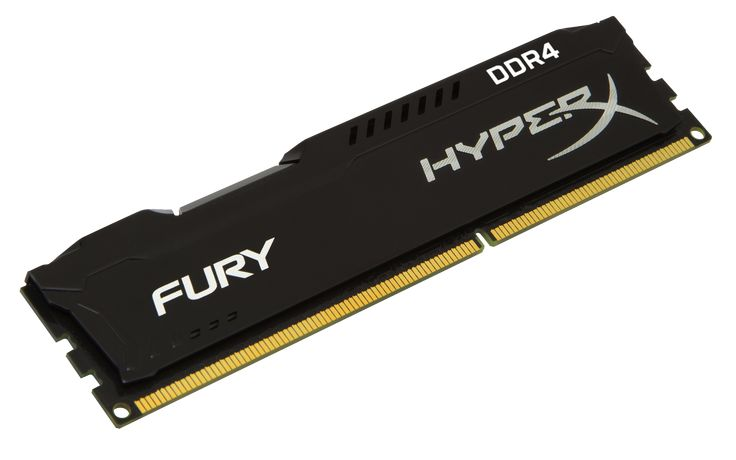
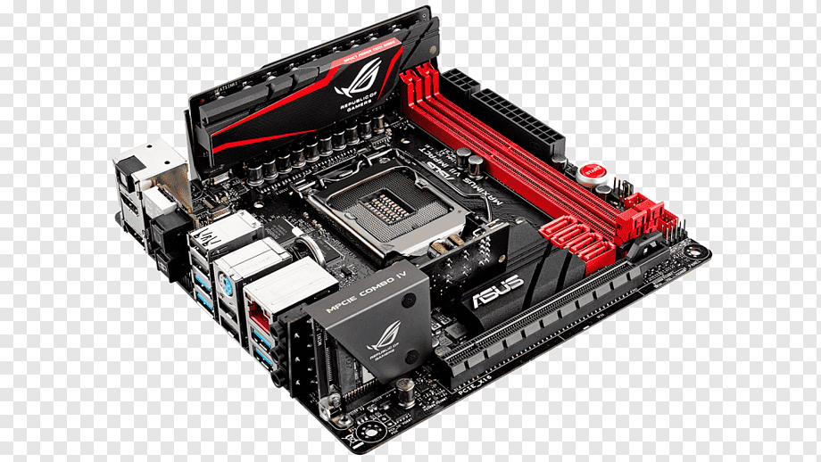

💻 Bienvenid@ a tu guía de informática 💻
Descubre los componentes esenciales de una computadora y cómo funcionan juntos
Para que sirven los componentes en una computadora
Los componentes de una computadora, tanto
internos como externos, son las partes físicas que permiten a la máquina funcionar, procesar información
y ejecutar programas. Cada componente tiene una función específica que, en conjunto, habilita
la interacción del usuario con la máquina, desde la entrada de datos hasta la visualización de la información
Que tipos de componente existen en una computadora
Características
Tarjeta de video
Proporciona video
Memoria RAM
Guarda temporalmente memoria
en una computadora
Placa Base
Une todos los componentes
de una computadora
Descripción de componentes
Tarjeta de video

La tarjeta gráfica o tarjeta de vídeo es un componente que
viene integrado en la placa base del PC o se instala aparte para ampliar sus capacidades.
Esta tarjeta está dedicada al procesamiento de datos relacionados con el vídeo
y las imágenes que se están reproduciendo en el ordenador.
Consultar mas informacion
Memoria RAM

La memoria RAM es la memoria principal de un dispositivo, donde se almacenan
de forma temporal los datos de los programas que estás utilizando en este momento.
Sus siglas significan Random Access Memory, y está presente en computadoras, laptops y móviles.
Consultar mas informacion
Placa madre

En computación, la placa madre o placa base es la tarjeta principal del sistema informático.
A ella se conectan todos los demás componentes del computador. Está dentro de la carcasa del CPU
y tiene salidas al exterior que permiten conectar periféricos y accesorios.
Consultar mas informacion
Conclusion
Los componentes de una PC son las partes tangibles, o
hardware, que integran la máquina. Esto incluye la CPU, la placa madre,
la RAM, la GPU, el almacenamiento y los dispositivos periféricos. La CPU es el cerebro, la placa madre la base, la RAM
la memoria temporal, la GPU procesa gráficos, el almacenamiento guarda la información y los periféricos son dispositivos
externos como el teclado y el ratón.